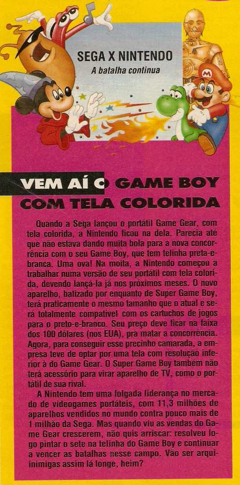

Game Boy com tela colorida
 :::. Por Gigacom
:::. Por Gigacom
fonte: Ação Games nº 13
O Game Gear foi uma sensação e tanto quando lançado, era uma chiquetesa só ter um desses, e ficou muito famoso em pouquissimo tempo, indo até participar de filmes e tudo mais. Porém, a Nintendo tinha chegado primeiro, e apesar do Game Boy ser bem mais simples e limitado em relação ao Game Gear, isso não significava que era um console ruim. A verdade é que nos EUA, o Game Boy vendia muito bem, e muitos jogos eram lançados para ele todos os meses, e eram jogos bons, de qualidade, e com grande variedade, indo de simples joguinhos de ação, até os Mario Land e Final Fantasy da vida.
Então, quando o Game Gear apareceu, a Nintendo procurou dar a volta por cima lançando algo melhor e começaram a surgir rumores de uma resposta da Nintendo à altura, com um novo portatil, muito mais capaz e principalmente com tela colorida... mas logo ela percebeu que não era necessário fazer isso de imediato.
Veio então, anos depois dessa nota aí em baixo na revista Ação Games nº 13 de 92, o primeiro review do Game Boy, que era o Game Boy Pocket, uns 2-3 anos depois é que apareceu o Collor. Essa demora toda, nas palavras dos desenvolvedores da Nintendo, era que a tecnologia para construir aquela telinha colorida, de modo que não engolisse pilhas e mais pilhas para funcionar, levou tempo para amadurecer e chegar ao ponto do que era no Collor. Ainda assim, a telinha não agradou muita gente, pois a falta de luz de fundo (backlight) dificultava enchergar qualquer coisa que era exibida ali. Isso só foi mudar quando apareceu o primeiro GBA com backlight, e logo em seguida no GBA SP.
|  |
E para você ver como a cartada da
Nintendo estava certa, o Game Boy tijolão durou muito mais tempo
que o Game Gear, e ficou vivo por tempo suficiente para ver o SNES ser
substituído pelo Nintendo 64, e recebendo jogos cada vez
melhores a cada ano! Recebeu versões dos maiores sucessos do
SNES, incluindo ai o Donkey Kong, e se não estou enganado,
até Killer Instict. É... o tijolão botava pra
quebrar nessa época.
Acesse o Trombone e comente sobre essa matéria!